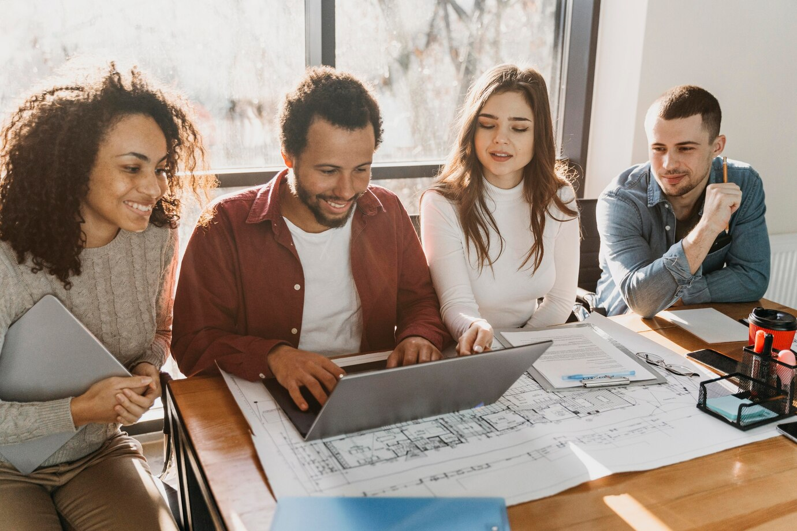

A I-Design nasceu com a missão de transformar espaços através de design inovador, sustentável e funcional. Fundada por um time de arquitetos visionários, a empresa se destaca pela sua capacidade de unir estética e praticidade em cada projeto, criando ambientes que refletem as necessidades e desejos dos clientes. Com um portfólio que abrange desde residenciais até grandes empreendimentos comerciais, a I-Design busca sempre utilizar as últimas tendências tecnológicas e materiais eco-friendly, garantindo não só beleza, mas também respeito ao meio ambiente. Acreditamos que cada projeto deve ser uma obra única, refletindo a personalidade do cliente e respeitando a natureza ao redor. Nossa visão é ser referência em design arquitetônico, reconhecida por criar espaços que impactam positivamente a sociedade e o planeta. Por meio da excelência e inovação, queremos oferecer soluções completas, desde a concepção até a execução final, mantendo um alto padrão de qualidade e comprometimento com prazos e orçamentos.
